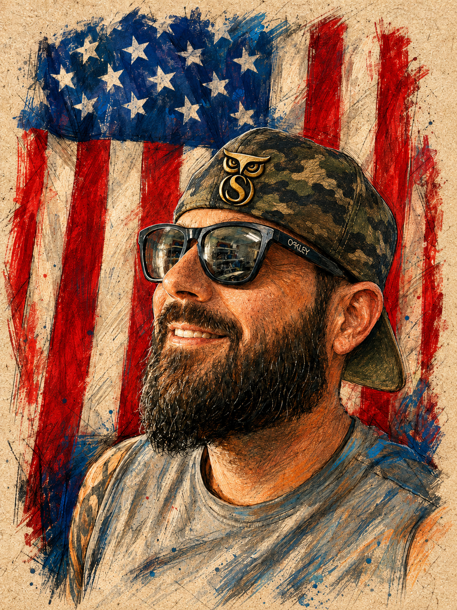

Support The Owl
Truth
Reliability
Understanding

Everything you experience here is built outside my career. I develop the software, structure the data, and work through the ideas during my nights off from an overnight shift.
Independent Technologist
- irbs
Owl Access
Unlock subscriber features and help support the work.
Use the same email when validating access in the app.